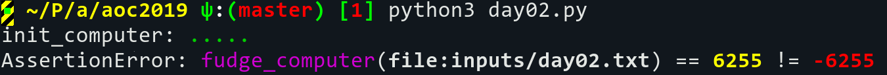
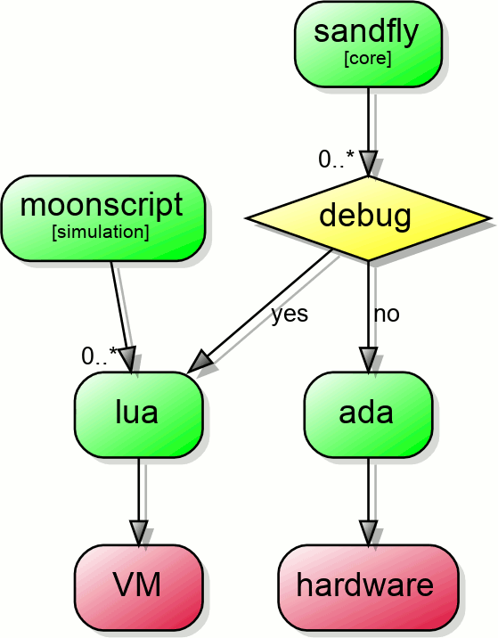
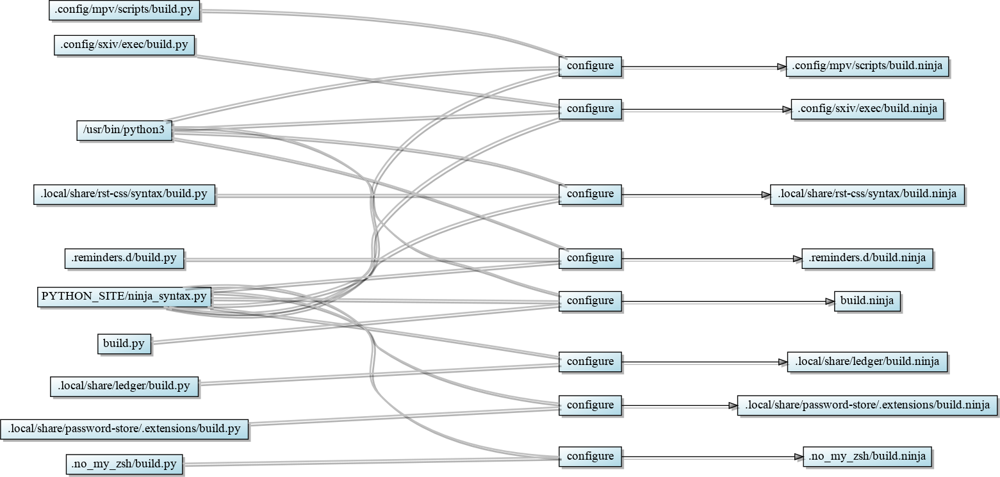
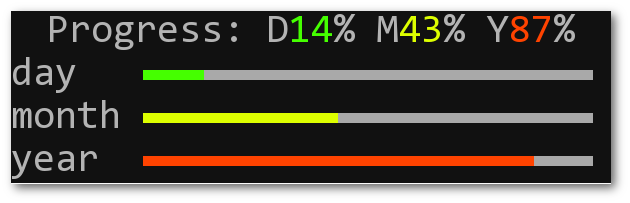
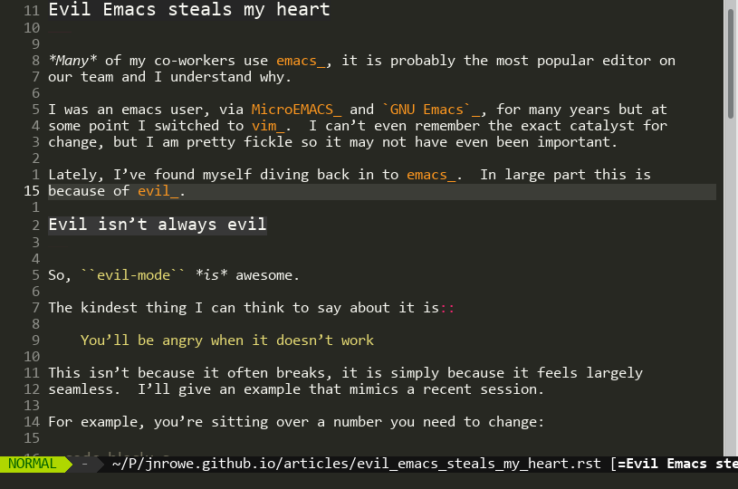
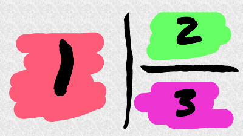

All Posts
Advent of Code 2019
- 2019-12-11
With a touch of sadness, I’ve given up on AoC for this year. I’m writing this as a journal entry, more for myself than others. You’ve been warned!
I have a secret
- 2019-05-24
A terrible secret haunts me, at times daily… I have virtually no SQL skills.

GPS rollover 2019
- 2019-04-05
Tomorrow we’re going to experience the simultaneously cataclysmic and mundane consequences of a GPS rollover event. Many things will break, many will continue to work and many will just take a step closer to breaking… the fun of date handling never ends.

Office hours
- 2018-12-23
A few co-workers have started offering office hours, seemingly spurred on by a post by Robert Heaton. I’m going to try this a little closer to Robert’s original idea, and make this offer to strangers too1.
![Appointment icon [from Adwaita icons]](_images/appointment-new.png)
Advent of Code 2018
- 2018-12-15
I’ve given up on AoC for this year, so we’ll have a ten day early retrospective. I’m writing this as a journal entry, more for myself than others. You’ve been warned!

Giddy new project love
- 2018-12-04
I’ve recently inherited a new tier-one project, which is great news! Sadly, it is in real need of some Tender Loving Care™. Was there ever an inherited project that wasn’t?
while $sun; do make hay; done
- 2018-11-23
This is a massive brain dump, which I plan to rewrite in to a series at some point. However, until that imaginary date arrives…
Visualising the progress of time
- 2018-11-13
A co-worker was demoing a user session today, and pointed out a neat tool for MacOS that displays the “continual march toward death”. That tool was Progress Bar OSX, and it is pretty cool. Sadly it is only available for MacOS, so we’ll need to make something similar.
Evil Emacs steals my heart
- 2018-11-05
Many of my co-workers use emacs, it is probably the most popular editor on our team and I understand why.
File renaming for the lazy
- 2018-10-26
Over at HN in a stolen topic:
however, i miss one feature for which i’d use a filemanager: in-place file renaming. in most cases when i want to rename a file, i want to change a small part of it, and i don’t want to have to retype the whole filename.

Advent of Code 2017
- 2018-10-19
A very evil friend pointed me to Advent of Code last December, and I burnt a fair chunk of time on it. I mean… yeah, it was hugely fun but be warned it is enormously addictive1.

Tiling vs tabbing
- 2018-10-08
A fairly large chunk of my developer friends fawn over tmux and tabbed. These tools can give the effect of a multiple window interface to your terminal sessions, or apply a tabbed interface to any xembed supporting application respectively. I’ll freely admit they’re pretty awesome at what they do1.
Vim with day/night colourschemes
- 2018-09-15
The fabulous Miss Biddulph asks via our EADS Linux list:
I lurve taqua in vim during the day, but now the days are getting shorter it is beginning to destroy me. Is there a way to make vim use different colourschemes depending on time?
brexit through the gift shop
- 2018-06-08
This is a public letter to my co-workers, which probably shouldn’t be public.
Burning down the streets
- 2017-09-03
The whole thing makes me wonder whether a modern reintroduction of the skimmington ride for social media is long overdue.
fossil experiments
- 2014-11-12
For a variety of reasons we can no longer use GitHub at work for any project which isn’t Open Source. And since that decision was thrust upon us we’ve been playing with some alternatives for our workflow. We’ll probably end up choosing one of the self hosted clones at some point, but it was decided early on that we should evaluate a variety of options.
Cleanse thy soul
- 2014-09-18
For the past few years I’ve taken to having routine breaks from certain timesinks to help me focus and also to denoise some of my thoughts. The number one timesink in my world is without doubt the interwebs, and there are a few steps I’ve taken to weaken its stranglehold.
Open Source and enjoyment
- 2014-09-03
A few years ago I burned out on Open Source projects, to the point that it was close to impacting other parts of my life. I have only myself to blame as I didn’t manage to distance myself at all well. Distancing yourself is not easy to do when your fun hobby for relaxation is the thing that is working against you.
jnrowe-misc - The unsorted package overlay
- 2014-06-30
A collection of ebuild files with no overall theme.
Project postmortems
- 2014-06-30
One of my favourite things about the day job is the post-project analysis and postmortems, which we lovingly refer to as probits internally.
Dropping Gentoo reflex
- 2014-06-29
After hitting the publish button on Dropping Gentoo a few friends commented that I was either unnecessarily harsh about Gentoo or we wasted an enormous amount of time on it. It definitely was the former, and I feel a touch ashamed for implying the latter.
Dropping Gentoo
- 2014-06-18
We’ve been using Gentoo for shipped products since June 2005, and as a development platform since September 2004. A long time, an incredibly long time in fact.
Delayed flashover
- 2014-04-09
This weekend a very good friend of mine is taking part in the London Marathon, and we’re all looking forward to the no-doubt incredible time she’ll finish in.
Hitting life’s reset button
- 2014-02-24
Seven months ago while enjoying a little Saturday afternoon cricket picnic, a friend posed the question:
Return to rambling
- 2014-01-27
I kept a public journal from about 2003 until 2009, with a new entry about every three days. I enjoyed the act of writing it greatly, and often looked forward to the period of contemplation it would create. However, eventually I found I had to kill it, but not because of waning enthusiasm as is so often the case.
Dopplr defects
- 2014-01-06
Dopplr was a free social networking service, launched in 2007, that allowed users to create itineraries of their travel plans and spot correlations with their contacts’ travel plans in order to arrange meetings at any point on their journey.
Tell me a nice story, please
- 2013-12-23
I’m fed up of hearing bad stories, I really am. Often it feels like every person I know simply revels in the misfortune or missteps of others, and it is beginning to truly annoy me.
Side-projects
- 2013-12-16
Chatting with my brother yesterday he expressed some disbelief when I mentioned yet another friend who has a website related to some topic we were discussing:
TDD distro development
- 2011-06-13
Using TDD for distribution development is a hot topic in some of the more geeky circles I move in, and I’m very happy about this. Anything that increases the robustness of my desktop computer, my phone or any other device I use is a great goal!
Mangling planets
- 2010-09-17
Over lunch today a few people were talking about planet feeds, and the topics mostly revolved around why they don’t read them. I was quite surprised how many people miss out on the often marvellous insights in to the projects we use everyday, but I think I understand the reasoning.

Populating sup contacts from abook
- 2010-03-23
A colleague from work, Adam Robertson, is switching to Sup from mutt and wondering how to easily convert his contacts from abook. Given that it is my constant pimping of sup that has convinced him to switch I feel obliged to help with the conversion.
Debugging Python RegEx
- 2009-10-29
Rob Sampson is learning Python and struggling to get to grips with its RegEx handling. He asks on one of our internal lists at the office:
Zsh and the VCS
- 2009-10-28
I’ve recently switched to Zsh as my login shell after 9 years of using bash, and for no particularly good reason either as they’re both great interactive shells. I guess all the Kool Kids are doing it, and I’m just playing catchup. The one side effect of that is I’m now scribbling tips about zsh too…
Three mobile broadband in Linux
- 2009-10-14
Steve Lowry is picking up his Three modem this afternoon and asks on our internal Linux list if it supports Linux.
Visual vim mode identifier
- 2009-10-13
Paul Kerry rants about his problems with vim over the cooler today, and as a long time vim user I found it hard not to respond to some of the points.
Instant web server
- 2009-10-12
Among the topics on our Linux list at work today was a question from Luke Fletcher that I was expecting to unleash a flurry of emotional responses:
Gentoo one liners
- 2009-10-09
On our Linux list at work the topic of Gentoo usage arose again today. Originally, the topic was about interesting one liners used to maintain a Gentoo system. I found myself posting extended replies to some of the questions and I’m reposting a few of those here.
Importing gmail filters in mutt
- 2009-10-08
On our company’s Linux list Ryan Abbott is preparing to move to mutt:
Sharing Xresources between systems
- 2009-10-05
In amongst the rants in our watercooler channel at work comes this question:
Simple notifications in awesome
- 2009-10-04
On seeing my window notifications in awesome from a screencast for a new project at work Matt Cooper asks:
Toggling settings in vim
- 2009-10-02
As you can never have enough keybinding tips and vim helps to prove that, the
tip for today answers Joshua’s question from ##purplism
Custom keybindings in the GTK+ file dialogs
- 2009-10-01
In Fancy_awesome_theming I included a screenshot that, by accident more than design, spawned today’s tip.
Context aware diffs with git
- 2009-09-29
Earlier this week Luke Cox asked in response to a patch I sent:
Fancy awesome theming
- 2009-09-28
People, mostly named Neil Blake, who shouldn’t look over my shoulder ask:
mutt configuration snippets
- 2007-03-05
mutt is my favourite MUA, one of the few tools I truly believe I couldn’t manage without. It is also one of those tools, along with vim, which can end up sucking away all your free time to configure it just how you want.
Proper keyboard shortcuts in GTK+
- 2007-03-05
If you’re used to the old style GTK+ keyboard shortcuts, and find yourself
continually closing windows when you’re trying to delete a word (like me) then
add the following to your ~/.gtkrc-2.0:
Introduction to RCS
- 2003-09-05
I’ve resurrected this text from my old UKFSN site because a couple of people asked me to, but I wouldn’t recommend using RCS to anyone at this point. It is mainly to help people who need to understand RCS because they have no choice, for example Gentoo users who are stuck with dispatch-conf (or so my mails tell me).